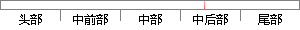

FlyMcu仿真软件 是一款 用于STM32烧录程序的工具，
片段位置图

相似结果
相似片段：
软件 软件大小：1.01 MB 推荐星级： 更新时间：2013-02-28 06:33:50 官方主页： 下载次数：周:6 日:26 软件标签： 宣传我吧：论坛转贴 FlyMcu仿真软件软件简介 FlyMcu仿真软件用于stm32烧录程序的工具，比较容易入手，实用方便. FlyMcu仿真软件包括在电路编程(ICP)，和在应用编程(IAP)，在很多场合已体现出比传统的编程座编程的优势。这是由于单片
| 对比库： | WriteCheck云资源库 |
| 来源： | www.nonwovenbags.cn 查看来源 |
| 发布时间： | 2015-02-03 |
| 相似率 | 68% （轻度抄袭） |